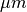
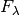
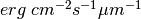
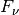

Main SPLAT module¶
Examples¶
TBD
Classes¶
-
class
splat.Spectrum(*args, **kwargs)¶ Description: Primary class for containing spectral and source data for SpeX Prism Library.
Parameters: - model (optional, default = False) –
- wlabel (optional, default = 'Wavelength') – label of wavelength
- wunit (optional, default =
u.micron) – unit in which wavelength is measured - wunit_label (optional, default = ) – label of the unit of wavelength
- flabel (optional, default = ) – label of flux density
- fscale (optional, default = '') – string describing how flux density is scaled
- funit (optional, default =
u.erg/(u.cm**2 * u.s * u.micron)) – unit in which flux density is measured - funit_label (optional, default = ) – label of the unit of flux density
- resolution (optional, default = 150) –
- slitpixelwidth (optional, default = 3.33) – Width of the slit measured in subpixel values.
- slitwidth (optional, default =
slitpixelwidth* 0.15) – Actual width of the slit, measured in arc seconds. Default value is theslitpixelwidthmultiplied by the spectrograph pixel scale of 0.15 arcseconds. - header (optional, default = Table()) – header info of the spectrum
- filename (optional, default = '') – a string containing the spectrum’s filename.
- file (optional, default = '') – same as filename
- idkey (optional, default = False) – spectrum key of the desired spectrum
Example: >>> import splat >>> sp = splat.Spectrum(filename='myspectrum.fits') # read in a file >>> sp = splat.Spectrum('myspectrum.fits') # same >>> sp = splat.Spectrum(10002) # read in spectrum with idkey = 10002 >>> sp = splat.Spectrum(wave=wavearray,flux=fluxarray) # create objects with wavelength & flux arrays
-
__add__(other)¶ Purpose: Adds two spectra Parameters: other – the other spectrum to add to the object
-
__div__(other)¶ Purpose: Divides two spectra Parameters: other – the other spectrum to divide by the object
-
__mul__(other)¶ Purpose: Multiplies two spectra Parameters: other – the other spectrum to multiply by the object
-
__repr__()¶ Purpose: A simple representation of an object is to just give it a name
-
__sub__(other)¶ Purpose: Subtracts two spectra Parameters: other – the other spectrum to subtract from the object
-
flamToFnu()¶ Purpose: Converts flux density from to , the later in Jy
-
fluxCalibrate(f, mag, **kwargs)¶ Purpose: Calibrates spectrum to input magnitude
-
fluxMax(**kwargs)¶ Purpose: Determines maximum flux of spectrum Parameters: maskTelluric (optional, default = True) – masks telluric regions
-
fnuToFlam()¶ Purpose: Converts flux density from to , the later in erg/s/cm2/Hz
-
info()¶ Purpose: Reports some information about this spectrum.
-
normalize(**kwargs)¶ Purpose: Normalizes spectrum to its maximum flux. Parameters: maskTelluric (optional, default = True) – masks telluric regions
-
plot(**kwargs)¶ Purpose: Plots spectrum. See SPLAT Plotting Routines page for more details.
-
reset()¶ Purpose: Resets to original spectrum
-
scale(factor)¶ Purpose: Smooths spectrum to a constant slit width (smooths by pixels)
Parameters: - method (optional, default = 'hanning') – the type of window to create. See http://docs.scipy.org/doc/scipy-0.14.0/reference/generated/scipy.signal.get_window.html for more details.
- slitpixelwidth (optional, default = 3.33) – Width of the slit measured in subpixel values.
- slitwidth (optional, default = slitpixelwidth * 0.15) – Actual width of the slit, measured in arc seconds. Default value is the
slitpixelwidthmultiplied by the spectrograph pixel scale of 0.15 arcseconds. - resolution (optional, default = 150) –
-
smooth(**kwargs)¶ Smooth spectrum to a constant slit width (smooth by pixels)
-
smoothToResolution(resolution, **kwargs)¶ Purpose: Smooths spectrum to a constant resolution
Parameters: - resolution – resolution for smoothing the spectrum
- overscale (optional, default = 10.) – used for computing number of samples in the window
- method (optional, default = 'hanning') – the type of window to create. See http://docs.scipy.org/doc/scipy-0.14.0/reference/generated/scipy.signal.get_window.html for more details.
-
smoothToSlitPixelWidth(width, **kwargs)¶ Purpose: Smooths spectrum to a constant slit width
Parameters: - width – width for smoothing the spectrum
- method (optional, default = 'hanning') – the type of window to create. See http://docs.scipy.org/doc/scipy-0.14.0/reference/generated/scipy.signal.get_window.html for more details.
-
smoothToSlitWidth(width, **kwargs)¶ Purpose: Smooths spectrum to a constant slit width (smooths by pixels)
Parameters: - width – width for smoothing the spectrum
- method (optional, default = 'hanning') – the type of window to create. See http://docs.scipy.org/doc/scipy-0.14.0/reference/generated/scipy.signal.get_window.html for more details.
-
snr()¶ Purpose: Compute a representative S/N value Note
Unfinished
-
surface(radius)¶ Purpose: Convert to surface fluxes given a radius, assuming at absolute fluxes Note
Unfinished
Routines¶
Data Access¶
-
splat.getSpectrum(*args, **kwargs)¶ Purpose: Gets a spectrum from the SPLAT library using various selection criteria. Parameters: - sp – array of Spectrum class objects, each of which should contain wave, flux and noise array elements.
- name (optional) – search by source name (e.g.,
name = 'Gliese 570D') - shortname (optional) – search be short name (e.g.
shortname = 'J1457-2124') - designation (optional) – search by full designation (e.g.,
designation = 'J11040127+1959217') - coordinate (optional) – search around a coordinate by a radius specified by radius keyword (e.g.,
coordinate = [180.,+30.], radius = 10.) - radius (optional, default = 10) – search radius in arcseconds for coordinate search
- spt (optional) – search by SpeX spectral type; single value is exact, two-element array gives range (e.g.,
spt = 'M7'orspt = [24,39]) - spex_spt (optional) – same as
spt - opt_spt (optional) – same as
sptfor literature optical spectral types - nir_spt (optional) – same as
sptfor literature NIR spectral types - jmag, hmag, kmag (optional) – select based on faint limit or range of J, H or Ks magnitudes (e.g.,
jmag = [12,15]) - snr (optional) – search on minimum or range of S/N ratios (e.g.,
snr = 30.orsnr = [50.,100.]) - subdwarf, young, binary, spbinary, red, blue, giant, wd, standard (optional) – classes to search on (e.g.,
young = True) - logic (optional, default = 'and') – search logic, can be
andoror - combine (optional, default = 'and') – same as logic
- date (optional) – search by date (e.g.,
date = '20040322') or range of dates (e.g.,date=[20040301,20040330]) - reference (optional) – search by list of references (bibcodes) (e.g.,
reference = '2011ApJS..197...19K') - sort (optional, default = True) – sort results based on Right Ascension
- list (optional, default = False) – if True, return just a list of the data files (can be done with searchLibrary as well)
- lucky (optional, default = False) – if True, return one randomly selected spectrum from the selected sample
Example: >>> import splat >>> sp = splat.getSpectrum(shortname='1507-1627')[0] Retrieving 1 file >>> sparr = splat.getSpectrum(spt='M7') Retrieving 120 files >>> sparr = splat.getSpectrum(spt='T5',young=True) No files match search criteria
-
splat.loadSpectrum(*args, **kwargs)¶ Note
deprecated
-
splat.readSpectrum(*args, **kwargs)¶
-
splat.searchLibrary(*args, **kwargs)¶ Purpose: Search the SpeX database to extract the key reference for that Spectrum
Parameters: - output (optional, default = 'all') – returns desired output of selected results
- logic (optional, default = 'and') – search logic, can be
andoror - combine (optional, default = 'and') – same as logic
Example: >>> import splat >>> print splat.searchLibrary(shortname = '2213-2136') DATA_KEY SOURCE_KEY DATA_FILE ... SHORTNAME SELECT_2 -------- ---------- ---------------- ... ---------- -------- 11590 11586 11590_11586.fits ... J2213-2136 1.0 11127 11586 11127_11586.fits ... J2213-2136 1.0 10697 11586 10697_11586.fits ... J2213-2136 1.0 10489 11586 10489_11586.fits ... J2213-2136 1.0 >>> print splat.searchLibrary(shortname = '2213-2136', output = 'OBSERVATION_DATE') OBSERVATION_DATE ---------------- 20110908 20080829 20060902 20051017
Note
Note that this is currently only and AND search - need to figure out how to a full SQL style search
-
splat.fetchDatabase(*args, **kwargs)¶ Purpose: Get the SpeX Database from either online repository or local drive
-
splat.keySource(keys, **kwargs)¶ Purpose: Takes a source key and returns a table with the source information Parameters: keys – source key or a list of source keys Example: >>> import splat >>> print splat.keySource(10001) SOURCE_KEY NAME DESIGNATION ... NOTE SELECT ---------- ------------------------ ----------------- ... ---- ------ 10001 SDSS J000013.54+255418.6 J00001354+2554180 ... True >>> print splat.keySource([10105, 10623]) SOURCE_KEY NAME DESIGNATION ... NOTE SELECT ---------- ---------------------- ----------------- ... ---- ------ 10105 2MASSI J0103320+193536 J01033203+1935361 ... True 10623 SDSS J09002368+2539343 J09002368+2539343 ... True >>> print splat.keySource(1000001) No sources found with source key 1000001 False
-
splat.keySpectrum(keys, **kwargs)¶ Purpose: Takes a spectrum key and returns a table with the spectrum and source information Parameters: keys – spectrum key or a list of source keys Example: >>> import splat >>> print splat.keySpectrum(10001) DATA_KEY SOURCE_KEY DATA_FILE ... COMPANION COMPANION_NAME NOTE_2 -------- ---------- ---------------- ... --------- -------------- ------ 10001 10443 10001_10443.fits ... >>> print splat.keySpectrum([10123, 11298]) DATA_KEY SOURCE_KEY DATA_FILE ... COMPANION COMPANION_NAME NOTE_2 -------- ---------- ---------------- ... --------- -------------- ------ 11298 10118 11298_10118.fits ... 10123 10145 10123_10145.fits ... >>> print splat.keySpectrum(1000001) No spectra found with spectrum key 1000001 False
Spectral Classification¶
-
splat.classifyByIndex(sp, *args, **kwargs)¶ Purpose: Determine the spectral type and uncertainty for a spectrum based on indices. Makes use of published index-SpT relations from Reid et al. (2001); Testi et al. (2001); Allers et al. (2007); and Burgasser (2007). Returns 2-element tuple containing spectral type (numeric or string) and uncertainty.
Parameters: - sp – Spectrum class object, which should contain wave, flux and noise array elements.
- set (optional, default = 'burgasser') –
named set of indices to measure and compute spectral type
- ‘allers’: H2O from Allers et al. (2007)
- ‘burgasser’: H2O-J, CH4-J, H2O-H, CH4-H, CH4-K from Burgasser (2007)
- ‘reid’:H2O-A and H2O-B from Reid et al. (2001)
- ‘testi’: sHJ, sKJ, sH2O_J, sH2O_H1, sH2O_H2, sH2O_K from Testi et al. (2001)
- string (optional, default = False) – return spectral type as a string (uses typeToNum)
- round (optional, default = False) – rounds off to nearest 0.5 subtypes
- remeasure (optional, default = True) – force remeasurement of indices
- nsamples (optional, default = 100) – number of Monte Carlo samples for error computation
- nloop (optional, default = 5) – number of testing loops to see if spectral type is within a certain range
Example: >>> import splat >>> spc = splat.getSpectrum(shortname='0559-1404')[0] >>> print splat.classifyByIndex(spc, string=True, set='burgasser', round=True) ('T4.5', 0.2562934083414341)
Note
- Need to allow output of individual spectral types from individual indices
-
splat.classifyByStandard(sp, *args, **kwargs)¶ Purpose: Determine the spectral type and uncertainty for a spectrum by direct comparison to spectral standards. Standards span M0-T9 and include the standards listed in Kirkpatrick et al. (2010) with addition of UGPS 0722-0540 as the T9 standard. Returns the best match or an F-test weighted mean and uncertainty. There is an option to follow the procedure of Kirkpatrick et al. (2010), fitting only in the 0.9-1.4 micron region. Parameters: - sp – spectrum class object, which should contain wave, flux and noise array elements.
- best (optional, default = True) – return the best fit standard type only
- average (optional, default = True) – return an chi-square weighted type only
- compareto (optional, default = False) – compare to a single standard (string or number)
- plot (optional, default = False) – generate a plot comparing best fit standard to source, can be saved to a file using the
filekeyword - file (optional, default = '') – output spectrum plot to a file
- method (optional, default = '') –
set to
'kirkpatrick'to follow the Kirkpatrick et al. (2010) method, fitting only to the 0.9-1.4 micron band - sptrange (optional, default = ['M0','T9']) – constraint spectral type range to fit, can be strings or numbers
- string (optional, default = True) – return spectral type as a string
- verbose (optional, default = False) – give lots of feedback
Example: >>> import splat >>> spc = splat.getSpectrum(shortname='1507-1627')[0] >>> print splat.classifyByStandard(spc,string=True,method='kirkpatrick',plot=True) ('L4.5', 0.7138959194725174)
-
splat.classifyByTemplate(sp, *args, **kwargs)¶ Purpose: Determine the spectral type and uncertainty for a spectrum by direct comparison to a large set of spectra in the library. One can select down the spectra by using the set command. Returns the best match or an F-test weighted mean and uncertainty. There is an option to follow the procedure of Kirkpatrick et al. (2010), fitting only in the 0.9-1.4 micron region. Output: Returns a dictionary containing the following keys:
- result: a tuple containing the spectral type and its uncertainty)
- chisquare: array of nbest chi-square values
- name: array of nbest source names
- scale: array of nbest optimal scale factors
- spectra: array of nbest Spectrum objects
- spt: array of nbest spectral types
Parameters: - sp – Spectrum class object, which should contain wave, flux and noise array elements.
- best (optional, default = False) – return only the best fit template type
- plot (optional, default = False) – generate a plot comparing best fit standard to source, can be save to a file using the file keyword
- file (optional, default = '') – output spectrum plot to a file
- method (optional, default = '') –
set to
'kirkpatrick'to follow the Kirkpatrick et al. (2010) method, fitting only to the 0.9-1.4 micron band - nbest (optional, default = 1) – number of best fitting spectra to return
- set (optional, default = '') –
string defining which spectral template set you want to compare to; several options which can be combined:
- m dwarf: fit to M dwarfs only
- l dwarf: fit to M dwarfs only
- t dwarf: fit to M dwarfs only
- vlm: fit to M7-T9 dwarfs
- optical: only optical classifications
- high sn: median S/N greater than 100
- young: only young/low surface gravity dwarfs
- companion: only companion dwarfs
- subdwarf: only subdwarfs
- single: only dwarfs not indicated a binaries
- spectral binaries: only dwarfs indicated to be spectral binaries
- standard: only spectral standards (use classifyByStandard instead)
- string (optional, default = True) – return spectral type as a string
- spt_type (optional, default = 'literature') – specify which spectral classification type to return; can be ‘spex’, ‘opt’, ‘nir’, or ‘lit’
- verbose (optional, default = False) – give lots of feedback
Example: >>> import splat >>> spc = splat.getSpectrum(shortname='1507-1627')[0] >>> print splat.classifyByTemplate(spc,string=True,set='l dwarf, high sn', spt_type='spex', plot=True) ('L4.5', 0.7138959194725174)
-
splat.classifyGravity(sp, *args, **kwargs)¶ Purpose: Determine the gravity classification of a brown dwarf using the method of Allers & Liu (2013)
Parameters: - sp – Spectrum class object, which should contain wave, flux and noise array elements. Must be between M6.0 and L7.0.
- indices (optional, default = False) – specify indices set using
measureIndexSet. - spt (optional, default = False) – spectral type of
sp. Must be between M6.0 and L7.0 - plot (optional, default = False) – plot against spectral standard
- allscores (optional, default = False) – returns the full result, including the gravity scores from different indices
- verbose (optional, default = False) – give lots of feedback
Example: >>> import splat >>> sp = splat.getSpectrum(shortname='1507-1627')[0] >>> print splat.classifyGravity(sp) FLD-G >>> print splat.classifyGravity(sp, allscores = True) {'VO-z': 0.0, 'FeH-z': 1.0, 'gravity_class': 'FLD-G', 'H-cont': 0.0, 'KI-J': 1.0, 'score': 0.5}
-
splat.metallicity(sp, **kwargs)¶ Purpose: Metallicity measurement using Na I and Ca I lines and H2O-K2 index as described in Rojas-Ayala et al.(2012)
Parameters: - sp – Spectrum class object, which should contain wave, flux and noise array elements
- nsamples (optional, default = 100) – number of Monte Carlo samples for error computation
Example: >>> import splat >>> sp = splat.getSpectrum(shortname='0559-1404')[0] >>> print splat.metallicity(sp) (-0.50726104530066363, 0.24844773591243882)
Other Spectral Analyses¶
-
splat.compareSpectra(sp1, sp2, *args, **kwargs)¶ Purpose: Compare two spectra against each other. Returns the stat value as well as the scale factor. Minimum possible value is 1.e-9.
Parameters: - sp1 – Spectrum class object
- sp2 – Spectrum class object to compare with
sp1 - weights (optional, default = [1, ..., 1] for len(sp1.wave)) – set weights for flux values of
sp1 - mask (optional, default = [0, ..., 0] for len(sp1.wave)) – mask any flux value of
sp1; has to be an array with length equal assp1with only 0 (unmask) or 1 (mask). - fit_ranges (optional, default = [0.65,2.45]) – wavelength range, measured in microns
- mask_ranges (optional, default = []) – mask any flux value of
sp1by specifying the wavelength range. Must be in microns - mask_telluric (optional, default = False) – masks certain wavelengths to avoid effects from telluric absorption
- mask_standard (optional, default = False) – same as
mask_telluric - novar2 (optional, default = False) – compute without using variance of
sp2 - stat (optional, default = 'chisqr') –
string defining which statistical method to use; available options are:
- ‘chisqr’: compare by computing chi squared value
- ‘stddev’: compare by computing standard deviation
- ‘stddev_norm’: compare by computing normalized standard deviation
- ‘absdev’: compare by computing absolute deviation
- plot (optional, default = False) – plot
sp1with scaledsp2
Example: >>> import splat >>> import numpy >>> sp1 = splat.getSpectrum(shortname = '2346-3153')[0] >>> sp2 = splat.getSpectrum(shortname = '1421+1827')[0] >>> print splat.compareSpectra(sp1, sp2) (<Quantity 17633.117108524682>, 1.1354366238893992e-15) >>> m = numpy.zeros(len(sp1.wave)) >>> m[200:300] = 1 >>> m_range = [[1.3, 1.5]] >>> splat.compareSpectra(sp1, sp2, mask = m, mask_ranges = m_range, novar2 = True) (<Quantity 18980.062433571456>, 1.1694685419610533e-15)
-
splat.filterMag(sp, f, *args, **kwargs)¶ Purpose: Determine the photometric magnitude of a source based on the spectrum. Spectra are convolved with the filter specified by the filterinput. By default this filter is also convolved with a model of Vega to extract Vega magnitudes, but the user can also specify AB magnitudes, photon flux or energy flux.Parameters: - sp – Spectrum class object, which should contain wave, flux and noise array elements.
- filter –
Name of filter, must be one of the following:
- ‘2MASS J’, ‘2MASS H’, ‘2MASS Ks’
- ‘MKO J’, ‘MKO H’, ‘MKO K’, MKO Kp’, ‘MKO Ks’
- ‘NICMOS F090M’, ‘NICMOS F095N’, ‘NICMOS F097N’, ‘NICMOS F108N’
- ‘NICMOS F110M’, ‘NICMOS F110W’, ‘NICMOS F113N’, ‘NICMOS F140W’
- ‘NICMOS F145M’, ‘NICMOS F160W’, ‘NICMOS F164N’, ‘NICMOS F165M’
- ‘NICMOS F166N’, ‘NICMOS F170M’, ‘NICMOS F187N’, ‘NICMOS F190N’
- ‘NIRC2 J’, ‘NIRC2 H’, ‘NIRC2 Kp’, ‘NIRC2 Ks’
- ‘WIRC J’, ‘WIRC H’, ‘WIRC K’, ‘WIRC CH4S’, ‘WIRC CH4L’
- ‘WIRC CO’, ‘WIRC PaBeta’, ‘WIRC BrGamma’, ‘WIRC Fe2’
- info (optional, default = False) – give the filter names available
- custom (optional, default = False) – specify to a 2 x N vector array specifying the wavelengths and transmissions for a custom filter
- ab (optional, default = False) – compute AB magnitudes
- vega (optional, default = True) – compute Vega magnitudes
- energy (optional, default = False) – compute energy flux
- photon (optional, default = False) – compute photon flux
- filterFolder (optional, default = '') – folder containing the filter transmission files
- vegaFile (optional, default = '') – name of file containing Vega flux file, must be within
filterFolder - nsamples (optional, default = 100) – number of samples to use in Monte Carlo error estimation
Example: >>> import splat >>> spc = splat.getSpectrum(shortname='1507-1627')[0] >>> spc.fluxCalibrate('2MASS J',14.5) >>> print splat.filterMag(spc,'MKO J') (14.345894376898123, 0.027596454828421831)
-
splat.measureIndex(sp, *args, **kwargs)¶ Purpose: Measure an index on a spectrum based on defined methodology measure method can be mean, median, integrate index method can be ratio = 1/2, valley = 1-2/3, OTHERS output is index value and uncertainty
-
splat.measureIndexSet(sp, **kwargs)¶ Purpose: Measures indices of
spfrom specified sets. Returns dictionary of indices.Parameters: - sp – Spectrum class object, which should contain wave, flux and noise array elements
- set (optional, default = 'burgasser') –
string defining which indices set you want to use; options include:
- burgasser: H2O-J, CH4-J, H2O-H, CH4-H, H2O-K, CH4-K, K-J from Burgasser et al. (2006)
- tokunaga: K1, K2 from Tokunaga & Kobayashi (1999)
- reid: H2O-A, H2O-B from Reid et al. (2001)
- geballe: H2O-1.2, H2O-1.5, CH4-2.2 from Geballe et al. (2002)
- allers: H2O, FeH-z, VO-z, FeH-J, KI-J, H-cont from Allers et al. (2007), Allers & Liu (2013)
- testi: sHJ, sKJ, sH2O-J, sH2O-H1, sH2O-H2, sH2O-K from Testi et al. (2001)
- slesnick: H2O-1, H2O-2, FeH from Slesnick et al. (2004)
- mclean: H2OD from McLean et al. (2003)
- rojas: H2O-K2 from Rojas-Ayala et al.(2012)
Example: >>> import splat >>> sp = splat.getSpectrum(shortname='1555+0954')[0] >>> print splat.measureIndexSet(sp, set = 'reid') {'H2O-B': (1.0531856077273236, 0.0045092074790538221), 'H2O-A': (0.89673318593633422, 0.0031278302105038594)}
-
splat.measureEW(sp, *args, **kwargs)¶ Purpose: Measures equivalent widths (EWs) of specified lines
Parameters: - sp – Spectrum class object, which should contain wave, flux and noise array elements
- args – wavelength arrays. Needs at least two arrays to measure line and continuum regions.
- nonoise (optional, default = '') –
- line –
-
splat.measureEWSet(sp, *args, **kwargs)¶ Purpose: Measures equivalent widths (EWs) of lines from specified sets. Returns dictionary of indices.
Parameters: - sp – Spectrum class object, which should contain wave, flux and noise array elements
- set (optional, default = 'rojas') –
string defining which EW measurement set you want to use; options include:
- rojas: EW measures from Rojas-Ayala et al. (2012); uses Na I 2.206/2.209 Ca I 2.26 micron lines.
Example: >>> import splat >>> sp = splat.getSpectrum(shortname='1555+0954')[0] >>> print splat.measureEWSet(sp, set = 'rojas') {'Na I 2.206/2.209': (1.7484002652013144, 0.23332441577025356), 'Ca I 2.26': (1.3742491939667159, 0.24867705962337672), 'names': ['Na I 2.206/2.209', 'Ca I 2.26'], 'reference': 'EW measures from Rojas-Ayala et al. (2012)'}
Source Analysis¶
-
splat.typeToMag(spt, filt, **kwargs)¶ Purpose: Takes a spectral type and a filter, and returns absolute magnitude
Parameters: - spt – string or integer of the spectral type
- filter – filter of the absolute magnitude. Options are MKO K, MKO H, MKO J, MKO Y, MKO LP, 2MASS J, 2MASS K, or 2MASS H
- nsamples (optional, default = 100) – number of Monte Carlo samples for error computation
- unc (optional, default = 0.) – uncertainty of
spt - ref (optional, default = 'dupuy') –
Abs Mag/SpT relation used to compute the absolute magnitude. Options are:
- burgasser: Abs Mag/SpT relation from Burgasser (2007). Allowed spectral type range is L0 to T8, and allowed filters are MKO K.
- faherty: Abs Mag/SpT relation from Faherty et al. (2012). Allowed spectral type range is L0 to T8, and allowed filters are MKO J, MKO H and MKO K.
- dupuy: Abs Mag/SpT relation from Dupuy & Liu (2012). Allowed spectral type range is M6 to T9, and allowed filters are MKO J, MKO Y, MKO H, MKO K, MKO LP, 2MASS J, 2MASS H, and 2MASS K.
- filippazzo: Abs Mag/SpT relation from Filippazzo et al. (2015). Allowed spectral type range is M6 to T9, and allowed filters are 2MASS J and WISE W2.
Example: >>> import splat >>> print splat.typeToMag('L3', '2MASS J') (12.730064813273996, 0.4) >>> print splat.typeToMag(21, 'MKO K', ref = 'burgasser') (10.705292820099999, 0.26) >>> print splat.typeToMag(24, '2MASS J', ref = 'faherty') Invalid filter given for Abs Mag/SpT relation from Faherty et al. (2012) (nan, nan) >>> print splat.typeToMag('M0', '2MASS H', ref = 'dupuy') Spectral Type is out of range for Abs Mag/SpT relation from Dupuy & Liu (2012) Abs Mag/SpT relation (nan, nan)
-
splat.typeToTeff(input, **kwargs)¶ Purpose: Returns an effective temperature (Teff) and its uncertainty for a given spectral type
Parameters: - input – Spectral type; can be a number or a string from 0 (K0) and 49.0 (Y9).
- uncertainty (optional, default = 0.001) – uncertainty of spectral type
- unc (optional, default = 0.001) – same as
uncertainty - spt_e (optional, default = 0.001) – same as
uncertainty - ref (optional, default = 'stephens2009') –
Teff/SpT relation used to compute the effective temperature. Options are:
- golimowski: Teff/SpT relation from Golimowski et al. (2004). Allowed spectral type range is M6 to T8.
- looper: Teff/SpT relation from Looper et al. (2008). Allowed spectral type range is L0 to T8.
- stephens: Teff/SpT relation from Stephens et al. (2009). Allowed spectral type range is M6 to T8 and uses alternate coefficients for L3 to T8.
- marocco: Teff/SpT relation from Marocco et al. (2013). Allowed spectral type range is M7 to T8.
- filippazzo: Teff/SpT relation from Filippazzo et al. (2015). Allowed spectral type range is M6 to T9.
- set (optional, default = 'stephens2009') – same as
ref - method (optional, default = 'stephens2009') – same as
ref - nsamples (optional, default = 100) – number of samples to use in Monte Carlo error estimation
Example: >>> import splat >>> print splat.typeToTeff(20) (2233.4796740905499, 100.00007874571999) >>> print splat.typeToTeff(20, unc = 0.3, ref = 'golimowski') (2305.7500497902788, 127.62548366132124)
-
splat.estimateDistance(sp, **kwargs)¶ Purpose: Takes the apparent magnitude and either takes or determines the absolute magnitude, then uses the magnitude/distance relation to estimate the distance to the object in parsecs. Returns estimated distance and uncertainty in parsecs
Parameters: - sp – Spectrum class object, which should be flux calibrated to its empirical apparent magnitude
- mag (optional, default = False) – apparent magnitude of
sp - mag_unc (optional, default = 0) – uncertainty of the apparent magnitude
- absmag (optional, default = False) – absolute magnitude of
sp - absmag_unc (optional, default = 0) – uncertainty of the absolute magnitude
- spt (optional, default = False) – spectral type of
sp - spt_e (optional, default = 0) – uncertainty of the spectral type
- nsamples (optional, default = 100) – number of samples to use in Monte Carlo error estimation
- filter (optional, default = False) –
Name of filter, must be one of the following:
- ‘2MASS J’, ‘2MASS H’, ‘2MASS Ks’
- ‘MKO J’, ‘MKO H’, ‘MKO K’, MKO Kp’, ‘MKO Ks’
- ‘NICMOS F090M’, ‘NICMOS F095N’, ‘NICMOS F097N’, ‘NICMOS F108N’
- ‘NICMOS F110M’, ‘NICMOS F110W’, ‘NICMOS F113N’, ‘NICMOS F140W’
- ‘NICMOS F145M’, ‘NICMOS F160W’, ‘NICMOS F164N’, ‘NICMOS F165M’
- ‘NICMOS F166N’, ‘NICMOS F170M’, ‘NICMOS F187N’, ‘NICMOS F190N’
- ‘NIRC2 J’, ‘NIRC2 H’, ‘NIRC2 Kp’, ‘NIRC2 Ks’
- ‘WIRC J’, ‘WIRC H’, ‘WIRC K’, ‘WIRC CH4S’, ‘WIRC CH4L’
- ‘WIRC CO’, ‘WIRC PaBeta’, ‘WIRC BrGamma’, ‘WIRC Fe2’
- ‘WISE W1’, ‘WISE W2’
Example: >>> import splat >>> sp = splat.getSpectrum(shortname='1555+0954')[0] >>> print splat.estimateDistance(sp) Please specify the filter used to determine the apparent magnitude (nan, nan) >>> print splat.estimateDistance(sp, mag = 12.521, mag_unc = 0.022, absmag = 7.24, absmag_unc = 0.50, spt = 'M3') (116.36999172188771, 33.124820555524224)
Conversion Routines¶
-
splat.caldateToDate(d)¶ Purpose: Convert from numeric date to calendar date, and vice-versa.
Parameters: d – A numeric date of the format ‘20050412’, or a date in the calendar format ‘2005 Jun 12’
Example: >>> import splat >>> caldate = splat.dateToCaldate('20050612') >>> print caldate 2005 Jun 12 >>> date = splat.caldateToDate('2005 June 12') >>> print date 20050612
-
splat.dateToCaldate(d)¶ Purpose: Converts numeric date to calendar date Parameters: d – string in the form ‘YYYYMMDD’ Example: >>> import splat >>> print splat.dateToCaldate('19940523') 1994 May 23
-
splat.coordinateToDesignation(c)¶ Purpose: Converts right ascension and declination into a designation string Parameters: c – RA and Dec to be converted; can be a SkyCoord object with units of degrees, a list with RA and Dec in degrees, or a string with RA measured in hour angles and Dec in degrees Example: >>> import splat >>> from astropy.coordinates import SkyCoord >>> c = SkyCoord(238.86, 9.90, unit="deg") >>> print splat.coordinateToDesignation(c) J15552640+0954000 >>> print splat.coordinateToDesignation([238.86, 9.90]) J15552640+0954000 >>> print splat.coordinateToDesignation('15:55:26.4 +09:54:00.0') J15552640+0954000
-
splat.designationToCoordinate(value, **kwargs)¶ Purpose: Convert a designation into a RA, Dec tuple or ICRS
Parameters: - value – string with RA measured in hour angles and Dec in degrees
- icrs (optional, defualt = True) – returns coordinate in ICRS frame if
True
Example: >>> import splat >>> print splat.designationToCoordinate('1555.2640+0954.000') <SkyCoord (ICRS): ra=238.86 deg, dec=9.9 deg>
-
splat.designationToShortName(value)¶ Purpose: Produce a shortened version of designation Parameters: value – string with RA measured in hour angles and Dec in degrees Example: >>> import splat >>> print splat.designationToShortName('1555.2640+0954.000') J1555+0954
-
splat.typeToNum(input, **kwargs)¶ Purpose: Converts between string and numeric spectral types, and vise versa.
Parameters: - input – Spectral type to convert. Can convert a number or a string from 0 (K0) and 49.0 (Y9).
- error (optional, default = '') – magnitude of uncertainty. ‘:’ for uncertainty > 1 and ‘::’ for uncertainty > 2.
- uncertainty (optional, default = 0) – uncertainty of spectral type
- subclass (optional, default = '') –
subclass of object. Options include:
- sd: object is a subdwarf
- esd: object is an extreme subdwarf
- usd: object is an ultra subdwarf
- lumclass (optional, default = '') – luminosity class of object represented by roman numerals
- ageclass (optional, default = '') – age class of object
- colorclass (optional, default = '') – color class of object
- peculiar (optional, default = False) – if object is peculiar or not
Example: >>> import splat >>> print splat.typeToNum(30) T0.0 >>> print splat.typeToNum('T0.0') 30.0 >>> print splat.typeToNum(27, peculiar = True, uncertainty = 1.2, lumclass = 'II') L7.0IIp: >>> print splat.typeToNum(50) Spectral type number must be between 0 (K0) and 49.0 (Y9) nan
-
splat.properCoordinates(c)¶ Purpose: Converts various coordinate forms to the proper SkyCoord format. Convertible forms include lists and strings. Parameters: c – coordinate to be converted. Can be a list or a string. Example: >>> import splat >>> print splat.properCoordinates([104.79, 25.06]) <SkyCoord (ICRS): ra=104.79 deg, dec=25.06 deg> >>> print splat.properCoordinates('06:59:09.60 +25:03:36.0') <SkyCoord (ICRS): ra=104.79 deg, dec=25.06 deg>
-
splat.isNumber(s)¶ Purpose: Checks if something is a number. Parameters: s – object to be checked Example: >>> import splat >>> print splat.isNumber(3) True >>> print splat.isNumber('hello') False
I/O Routines¶
-
splat.checkOnline(*args)¶ Purpose: Checks if SPLAT’s URL is accessible from your machine– that is, checks if you and the host are online. Alternately checks if a given filename is present locally or online
Example: >>> import splat >>> splat.checkOnline() True # SPLAT's URL was detected. >>> splat.checkOnline() False # SPLAT's URL was not detected. >>> splat.checkOnline('SpectralModels/BTSettl08/parameters.txt') '' # Could not find this online file.
-
splat.checkAccess(**kwargs)¶ Purpose: Checks if user has access to unpublished spectra in SPLAT library.
Example: >>> import splat >>> print splat.checkAccess() True
Note: Must have the file .splat_access in your home directory with the correct passcode to use.
-
splat.checkFile(filename, **kwargs)¶ Purpose: Checks if a spectrum file exists in the SPLAT’s library.
Parameters: filename – A string containing the spectrum’s filename.
Example: >>> import splat >>> spectrum1 = 'spex_prism_1315+2334_110404.fits' >>> print splat.checkFile(spectrum1) True >>> spectrum2 = 'fake_name.fits' >>> print splat.checkFile(spectrum2) False
Other Routines¶
-
splat.test()¶ Purpose: Tests the SPLAT Code
Checks the following: - If you are online and can see the SPLAT website
- If you have access to unpublished spectra
- If you can search for and load a spectrum
- If
searchLibraryfunctions properly - If index measurement routines functions properly
- If classification routines function properly
- If
typeToTefffunctions properly - If flux calibration and normalization function properly
- If
loadModelfunctions properly - If
compareSpectrafunctions properly - If
plotSpectrumfunctions properly